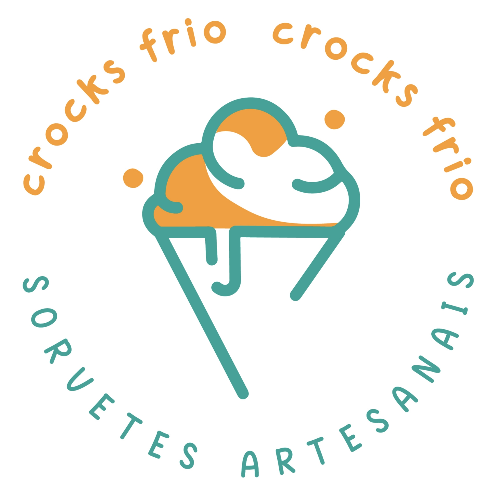

Aplicável a perfis no Google Business Profile, Instagram, Facebook e outras redes sociais
Garantir a padronização da marca Crocks Frio nos perfis de revendedores, evitando confusão com as lojas oficiais e transmitindo mais credibilidade e confiança aos clientes.